Results
This chapter presents the primary experiment-only models response by response. These models test whether the warming treatment affected each trait, while keeping measured external temperature out of the primary experimental test. Temperature models are shown on a separate page.
Response-level results
Day-2 body mass
Dependent variable
D2_MASS: Does incubation-stage warming affect body mass at day 2?
Model
Primary model: gaussian_mean
Formula: D2_MASS ~ EXP.INC + SEX + BS_sc + (1 | F_RING) + (1 | YEAR)
Sample size: 858
Dispersion formula: ~1
Fixed-effect estimates
| Term | Estimate | SE | z | p |
|---|---|---|---|---|
| (Intercept) | 3.171 | 0.093 | 33.947 | 0.0000 |
| EXP.INCHeated | -0.004 | 0.081 | -0.054 | 0.9569 |
| SEXM | -0.023 | 0.040 | -0.572 | 0.5670 |
| BS_sc | 0.062 | 0.039 | 1.596 | 0.1104 |
Saved model summary
Summary PDF: summary_D2_MASS_gaussian_mean.pdf
Diagnostic PDF: diagnostic_D2_MASS_gaussian_mean.pdf
Show saved model summary
Family: gaussian ( identity )
Formula: D2_MASS ~ EXP.INC + SEX + BS_sc + (1 | F_RING) + (1 | YEAR)
Data: model_data
AIC BIC logLik -2*log(L) df.resid
1631.9 1665.1 -808.9 1617.9 851
Random effects:
Conditional model:
Groups Name Variance Std.Dev.
F_RING (Intercept) 0.2039 0.4516
YEAR (Intercept) 0.0195 0.1396
Residual 0.2862 0.5350
Number of obs: 858, groups: F_RING, 165; YEAR, 4
Dispersion estimate for gaussian family (sigma^2): 0.286
Conditional model:
Estimate Std. Error z value Pr(>|z|)
(Intercept) 3.170625 0.093401 33.95 <2e-16 ***
EXP.INCHeated -0.004349 0.080563 -0.05 0.957
SEXM -0.022812 0.039852 -0.57 0.567
BS_sc 0.061993 0.038834 1.60 0.110
---
Signif. codes: 0 '***' 0.001 '**' 0.01 '*' 0.05 '.' 0.1 ' ' 1Model prediction figure
This plot uses model predictions as the main signal. Dark points and lines show fitted means from the primary mixed model, vertical intervals are 95% confidence intervals, and pale jittered points in the background show the original observations.
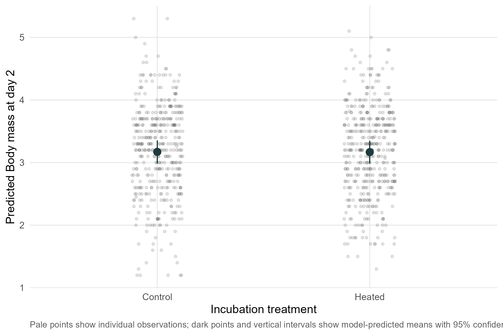
Raw-data distribution
This raw-data plot shows the response distribution within treatment groups. The box centre line is the median, the box spans the interquartile range (25th-75th percentiles), whiskers show the boxplot range, and points are individual nestling observations.
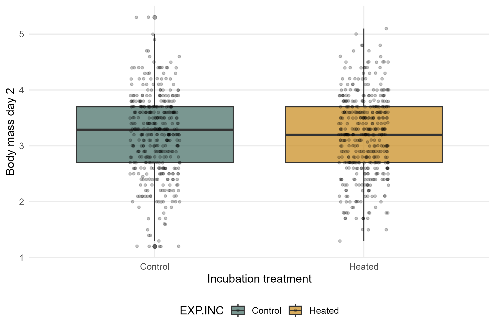
Day-8 body mass
Dependent variable
D8_MASS: Do incubation-stage and nestling-stage warming affect body mass at day 8?
Model
Primary model: gaussian_mean
Formula: D8_MASS ~ EXP.INC + EXP.NEST + SEX + BS_sc + (1 | F_RING) + (1 | YEAR)
Sample size: 775
Dispersion formula: ~1
Fixed-effect estimates
| Term | Estimate | SE | z | p |
|---|---|---|---|---|
| (Intercept) | 12.511 | 0.325 | 38.501 | 0.0000 |
| EXP.INCHeated | -0.503 | 0.247 | -2.032 | 0.0421 |
| EXP.NESTHeated | -0.027 | 0.247 | -0.109 | 0.9132 |
| SEXM | 0.101 | 0.086 | 1.170 | 0.2420 |
| BS_sc | -0.089 | 0.122 | -0.732 | 0.4643 |
Saved model summary
Summary PDF: summary_D8_MASS_gaussian_mean.pdf
Diagnostic PDF: diagnostic_D8_MASS_gaussian_mean.pdf
Show saved model summary
Family: gaussian ( identity )
Formula:
D8_MASS ~ EXP.INC + EXP.NEST + SEX + BS_sc + (1 | F_RING) + (1 | YEAR)
Data: model_data
AIC BIC logLik -2*log(L) df.resid
2690.5 2727.7 -1337.2 2674.5 767
Random effects:
Conditional model:
Groups Name Variance Std.Dev.
F_RING (Intercept) 2.0522 1.4325
YEAR (Intercept) 0.2233 0.4725
Residual 1.1761 1.0845
Number of obs: 775, groups: F_RING, 153; YEAR, 4
Dispersion estimate for gaussian family (sigma^2): 1.18
Conditional model:
Estimate Std. Error z value Pr(>|z|)
(Intercept) 12.51076 0.32495 38.50 <2e-16 ***
EXP.INCHeated -0.50254 0.24728 -2.03 0.0421 *
EXP.NESTHeated -0.02693 0.24701 -0.11 0.9132
SEXM 0.10086 0.08621 1.17 0.2420
BS_sc -0.08891 0.12150 -0.73 0.4643
---
Signif. codes: 0 '***' 0.001 '**' 0.01 '*' 0.05 '.' 0.1 ' ' 1Model prediction figure
This plot uses model predictions as the main signal. Dark points and lines show fitted means from the primary mixed model, vertical intervals are 95% confidence intervals, and pale jittered points in the background show the original observations.
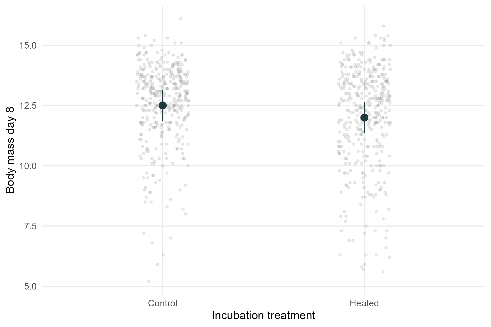
Raw-data distribution
This raw-data plot shows the response distribution within treatment groups. The box centre line is the median, the box spans the interquartile range (25th-75th percentiles), whiskers show the boxplot range, and points are individual nestling observations.
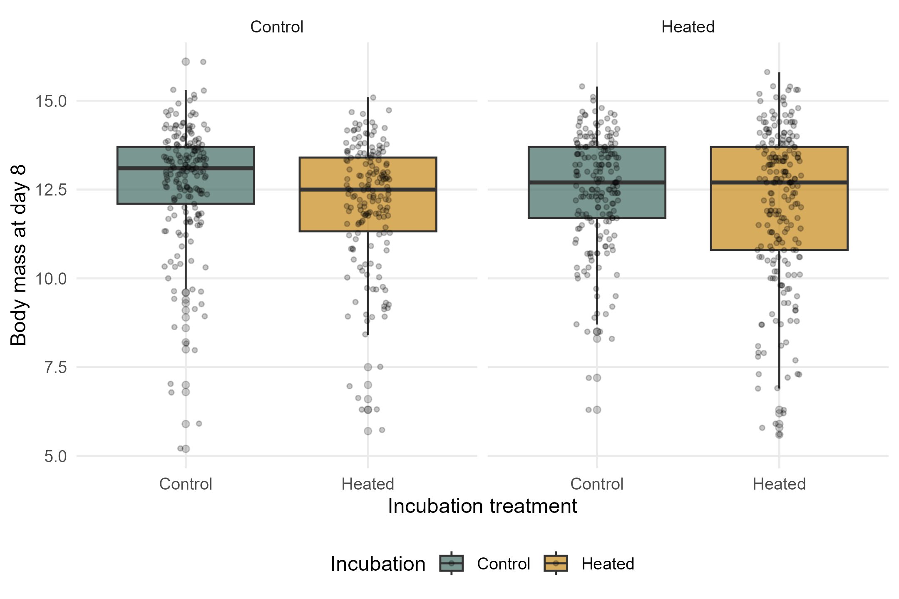
Day-12 body mass
Dependent variable
D12_MASS: Do incubation-stage and nestling-stage warming affect body mass at day 12?
Model
Primary model: gaussian_mean
Formula: D12_MASS ~ EXP.INC + EXP.NEST + SEX + BS_sc + (1 | F_RING) + (1 | YEAR)
Sample size: 687
Dispersion formula: ~1
Fixed-effect estimates
| Term | Estimate | SE | z | p |
|---|---|---|---|---|
| (Intercept) | 13.930 | 0.205 | 68.027 | 0.0000 |
| EXP.INCHeated | -0.247 | 0.230 | -1.072 | 0.2837 |
| EXP.NESTHeated | 0.054 | 0.229 | 0.237 | 0.8128 |
| SEXM | 0.144 | 0.073 | 1.968 | 0.0491 |
| BS_sc | 0.063 | 0.101 | 0.625 | 0.5320 |
Saved model summary
Summary PDF: summary_D12_MASS_gaussian_mean.pdf
Diagnostic PDF: diagnostic_D12_MASS_gaussian_mean.pdf
Show saved model summary
Family: gaussian ( identity )
Formula: D12_MASS ~ EXP.INC + EXP.NEST + SEX + BS_sc + (1 | F_RING) +
(1 | YEAR)
Data: model_data
AIC BIC logLik -2*log(L) df.resid
2091.5 2127.8 -1037.7 2075.5 679
Random effects:
Conditional model:
Groups Name Variance Std.Dev.
F_RING (Intercept) 1.715e+00 1.3096179
YEAR (Intercept) 5.369e-08 0.0002317
Residual 7.182e-01 0.8474456
Number of obs: 687, groups: F_RING, 144; YEAR, 4
Dispersion estimate for gaussian family (sigma^2): 0.718
Conditional model:
Estimate Std. Error z value Pr(>|z|)
(Intercept) 13.92954 0.20476 68.03 <2e-16 ***
EXP.INCHeated -0.24661 0.23003 -1.07 0.2837
EXP.NESTHeated 0.05433 0.22942 0.24 0.8128
SEXM 0.14370 0.07302 1.97 0.0491 *
BS_sc 0.06310 0.10097 0.62 0.5320
---
Signif. codes: 0 '***' 0.001 '**' 0.01 '*' 0.05 '.' 0.1 ' ' 1Model prediction figure
This plot uses model predictions as the main signal. Dark points and lines show fitted means from the primary mixed model, vertical intervals are 95% confidence intervals, and pale jittered points in the background show the original observations.
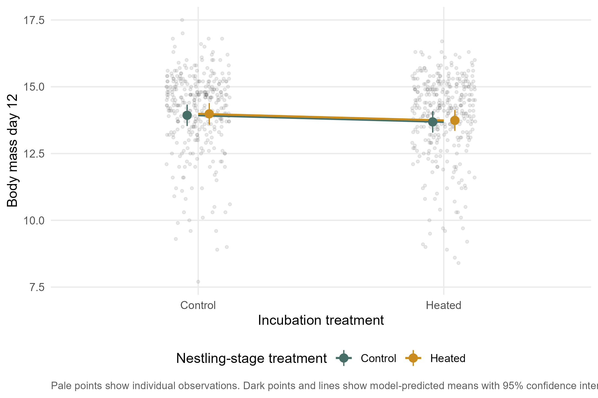
Raw-data distribution
This raw-data plot shows the response distribution within treatment groups. The box centre line is the median, the box spans the interquartile range (25th-75th percentiles), whiskers show the boxplot range, and points are individual nestling observations.
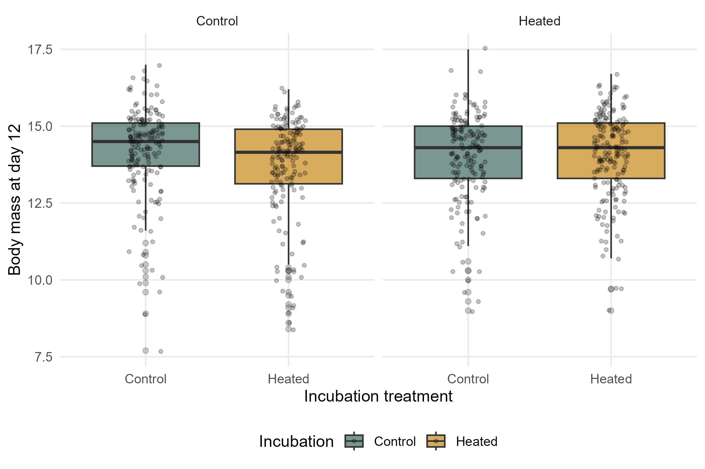
Early growth
Dependent variable
Early.g: Do incubation-stage and nestling-stage warming affect early nestling growth?
Model
Primary model: gaussian_mean
Formula: Early.g ~ EXP.INC + EXP.NEST + SEX + BS_sc + (1 | F_RING) + (1 | YEAR)
Sample size: 757
Dispersion formula: ~1
Fixed-effect estimates
| Term | Estimate | SE | z | p |
|---|---|---|---|---|
| (Intercept) | 1.561 | 0.049 | 31.579 | 0.0000 |
| EXP.INCHeated | -0.095 | 0.039 | -2.424 | 0.0153 |
| EXP.NESTHeated | -0.018 | 0.039 | -0.457 | 0.6476 |
| SEXM | 0.031 | 0.010 | 3.053 | 0.0023 |
| BS_sc | -0.020 | 0.019 | -1.074 | 0.2828 |
Saved model summary
Summary PDF: summary_Early.g_gaussian_mean.pdf
Diagnostic PDF: diagnostic_Early.g_gaussian_mean.pdf
Show saved model summary
Family: gaussian ( identity )
Formula:
Early.g ~ EXP.INC + EXP.NEST + SEX + BS_sc + (1 | F_RING) + (1 | YEAR)
Data: model_data
AIC BIC logLik -2*log(L) df.resid
-529.0 -492.0 272.5 -545.0 749
Random effects:
Conditional model:
Groups Name Variance Std.Dev.
F_RING (Intercept) 0.053109 0.23045
YEAR (Intercept) 0.004781 0.06915
Residual 0.016202 0.12729
Number of obs: 757, groups: F_RING, 150; YEAR, 4
Dispersion estimate for gaussian family (sigma^2): 0.0162
Conditional model:
Estimate Std. Error z value Pr(>|z|)
(Intercept) 1.56131 0.04944 31.579 < 2e-16 ***
EXP.INCHeated -0.09508 0.03922 -2.424 0.01533 *
EXP.NESTHeated -0.01786 0.03908 -0.457 0.64761
SEXM 0.03145 0.01030 3.053 0.00226 **
BS_sc -0.02023 0.01883 -1.074 0.28279
---
Signif. codes: 0 '***' 0.001 '**' 0.01 '*' 0.05 '.' 0.1 ' ' 1Model prediction figure
This plot uses model predictions as the main signal. Dark points and lines show fitted means from the primary mixed model, vertical intervals are 95% confidence intervals, and pale jittered points in the background show the original observations.
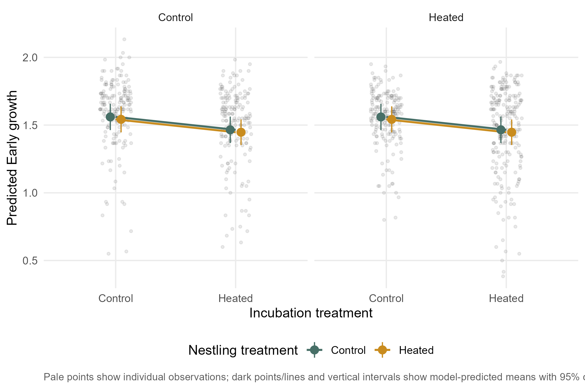
Raw-data distribution
This raw-data plot shows the response distribution within treatment groups. The box centre line is the median, the box spans the interquartile range (25th-75th percentiles), whiskers show the boxplot range, and points are individual nestling observations.
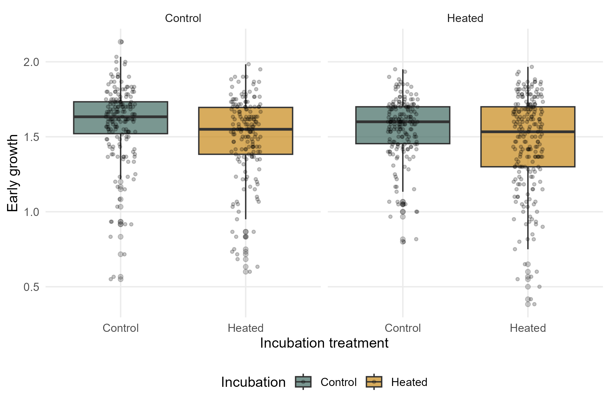
Late growth
Dependent variable
Late.g: Do incubation-stage and nestling-stage warming affect late nestling growth?
Model
Primary model: gaussian_mean
Formula: Late.g ~ EXP.INC + EXP.NEST + SEX + BS_sc + (1 | F_RING) + (1 | YEAR)
Sample size: 677
Dispersion formula: ~1
Fixed-effect estimates
| Term | Estimate | SE | z | p |
|---|---|---|---|---|
| (Intercept) | 0.280 | 0.075 | 3.741 | 0.0002 |
| EXP.INCHeated | 0.035 | 0.048 | 0.732 | 0.4642 |
| EXP.NESTHeated | 0.026 | 0.048 | 0.550 | 0.5824 |
| SEXM | 0.013 | 0.018 | 0.737 | 0.4613 |
| BS_sc | -0.007 | 0.023 | -0.285 | 0.7758 |
Saved model summary
Summary PDF: summary_Late.g_gaussian_mean.pdf
Diagnostic PDF: diagnostic_Late.g_gaussian_mean.pdf
Show saved model summary
Family: gaussian ( identity )
Formula:
Late.g ~ EXP.INC + EXP.NEST + SEX + BS_sc + (1 | F_RING) + (1 | YEAR)
Data: model_data
AIC BIC logLik -2*log(L) df.resid
118.7 154.8 -51.3 102.7 669
Random effects:
Conditional model:
Groups Name Variance Std.Dev.
F_RING (Intercept) 0.07058 0.2657
YEAR (Intercept) 0.01488 0.1220
Residual 0.04328 0.2080
Number of obs: 677, groups: F_RING, 141; YEAR, 4
Dispersion estimate for gaussian family (sigma^2): 0.0433
Conditional model:
Estimate Std. Error z value Pr(>|z|)
(Intercept) 0.279846 0.074804 3.741 0.000183 ***
EXP.INCHeated 0.035432 0.048408 0.732 0.464198
EXP.NESTHeated 0.026494 0.048181 0.550 0.582400
SEXM 0.013200 0.017918 0.737 0.461307
BS_sc -0.006688 0.023485 -0.285 0.775811
---
Signif. codes: 0 '***' 0.001 '**' 0.01 '*' 0.05 '.' 0.1 ' ' 1Model prediction figure
This plot uses model predictions as the main signal. Dark points and lines show fitted means from the primary mixed model, vertical intervals are 95% confidence intervals, and pale jittered points in the background show the original observations.
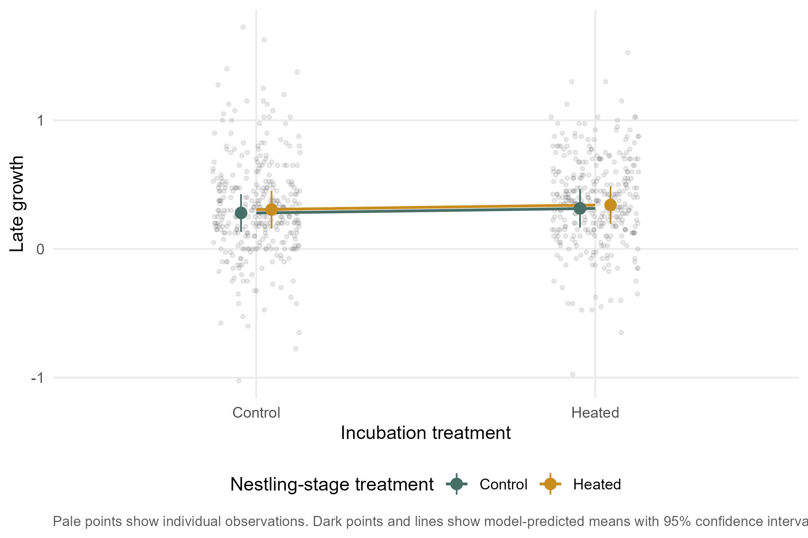
Raw-data distribution
This raw-data plot shows the response distribution within treatment groups. The box centre line is the median, the box spans the interquartile range (25th-75th percentiles), whiskers show the boxplot range, and points are individual nestling observations.
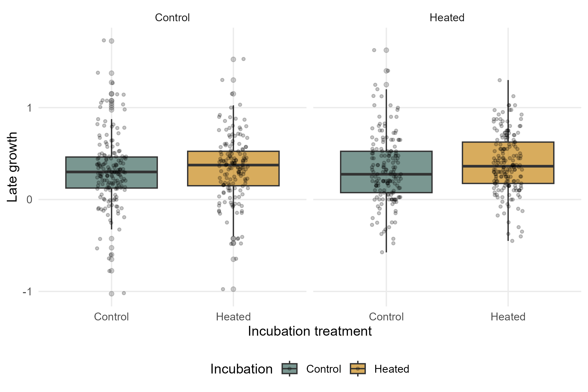
Whole-period growth
Dependent variable
Growth: Do incubation-stage and nestling-stage warming affect whole-period growth?
Model
Primary model: gaussian_mean
Formula: Growth ~ EXP.INC + EXP.NEST + SEX + BS_sc + (1 | F_RING) + (1 | YEAR)
Sample size: 664
Dispersion formula: ~1
Fixed-effect estimates
| Term | Estimate | SE | z | p |
|---|---|---|---|---|
| (Intercept) | 1.070 | 0.028 | 38.836 | 0.0000 |
| EXP.INCHeated* | -0.028 | 0.025 | -1.130 | 0.2583 |
| EXP.NESTHeated* | -0.006 | 0.025 | -0.236 | 0.8137 |
| SEXM | 0.019 | 0.007 | 2.519 | 0.0118 |
| BS_sc | -0.004 | 0.012 | -0.331 | 0.7410 |
The marked experimental effect changed direction between Gaussian and Student-t models. This result is treated as distribution-sensitive and is not interpreted here as robust biological evidence; see the Distribution sensitivity section.
Saved model summary
Summary PDF: summary_Growth_gaussian_mean.pdf
Diagnostic PDF: diagnostic_Growth_gaussian_mean.pdf
Show saved model summary
Family: gaussian ( identity )
Formula:
Growth ~ EXP.INC + EXP.NEST + SEX + BS_sc + (1 | F_RING) + (1 | YEAR)
Data: model_data
AIC BIC logLik -2*log(L) df.resid
-1014 -978 515 -1030 656
Random effects:
Conditional model:
Groups Name Variance Std.Dev.
F_RING (Intercept) 0.0197612 0.14057
YEAR (Intercept) 0.0009999 0.03162
Residual 0.0071733 0.08470
Number of obs: 664, groups: F_RING, 140; YEAR, 4
Dispersion estimate for gaussian family (sigma^2): 0.00717
Conditional model:
Estimate Std. Error z value Pr(>|z|)
(Intercept) 1.070461 0.027563 38.84 <2e-16 ***
EXP.INCHeated -0.028333 0.025064 -1.13 0.2583
EXP.NESTHeated -0.005877 0.024945 -0.24 0.8137
SEXM 0.018745 0.007441 2.52 0.0118 *
BS_sc -0.003836 0.011607 -0.33 0.7410
---
Signif. codes: 0 '***' 0.001 '**' 0.01 '*' 0.05 '.' 0.1 ' ' 1Model prediction figure
This plot uses model predictions as the main signal. Dark points and lines show fitted means from the primary mixed model, vertical intervals are 95% confidence intervals, and pale jittered points in the background show the original observations.
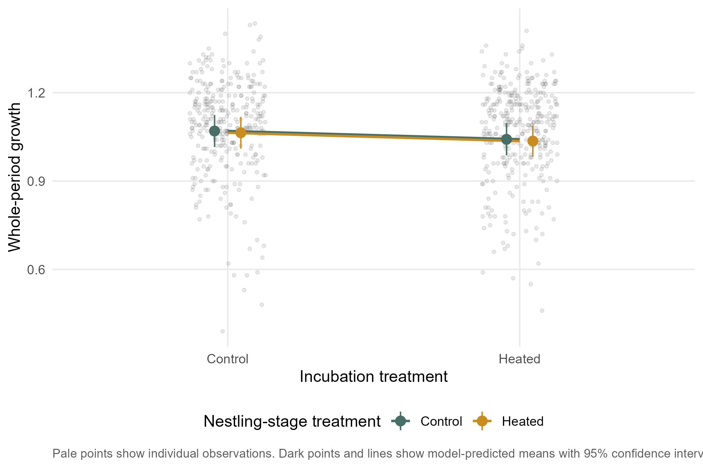
Raw-data distribution
This raw-data plot shows the response distribution within treatment groups. The box centre line is the median, the box spans the interquartile range (25th-75th percentiles), whiskers show the boxplot range, and points are individual nestling observations.
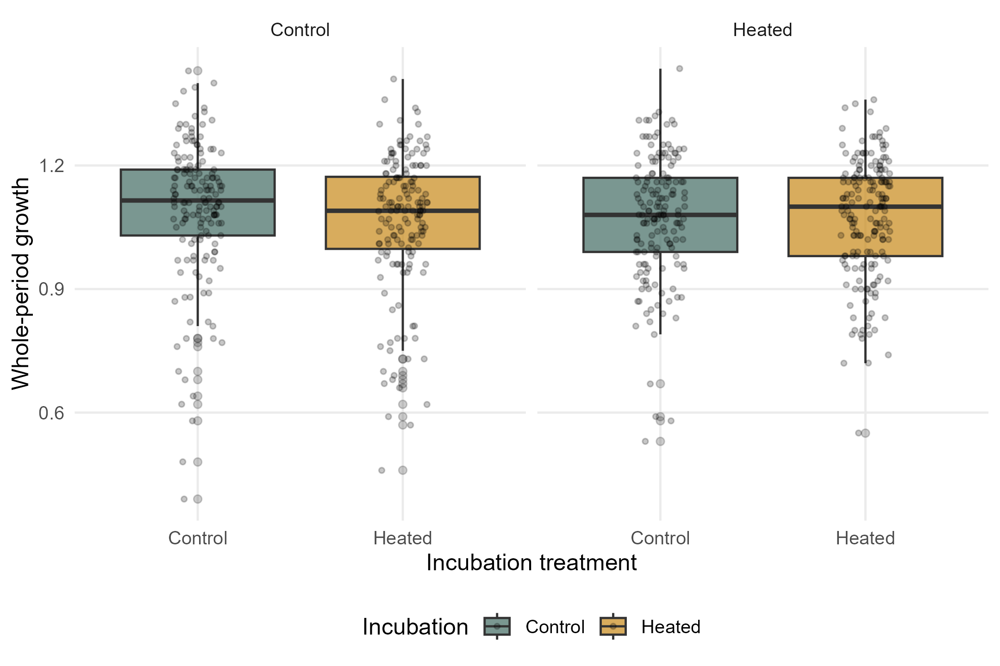
Day-12 scaled mass index
Dependent variable
D12_SMI: Do incubation-stage and nestling-stage warming affect day-12 scaled mass index?
Model
Primary model: gaussian_mean
Formula: D12_SMI ~ EXP.INC + EXP.NEST + SEX + BS_sc + (1 | F_RING) + (1 | YEAR)
Sample size: 679
Dispersion formula: ~1
Fixed-effect estimates
| Term | Estimate | SE | z | p |
|---|---|---|---|---|
| (Intercept) | 13.781 | 0.223 | 61.747 | 0.0000 |
| EXP.INCHeated | 0.078 | 0.212 | 0.367 | 0.7135 |
| EXP.NESTHeated | 0.127 | 0.212 | 0.598 | 0.5498 |
| SEXM | 0.270 | 0.087 | 3.093 | 0.0020 |
| BS_sc | -0.184 | 0.101 | -1.819 | 0.0690 |
Saved model summary
Summary PDF: summary_D12_SMI_gaussian_mean.pdf
Diagnostic PDF: diagnostic_D12_SMI_gaussian_mean.pdf
Show saved model summary
Family: gaussian ( identity )
Formula:
D12_SMI ~ EXP.INC + EXP.NEST + SEX + BS_sc + (1 | F_RING) + (1 | YEAR)
Data: model_data
AIC BIC logLik -2*log(L) df.resid
2241.3 2277.5 -1112.7 2225.3 671
Random effects:
Conditional model:
Groups Name Variance Std.Dev.
F_RING (Intercept) 1.32441 1.1508
YEAR (Intercept) 0.05372 0.2318
Residual 1.03768 1.0187
Number of obs: 679, groups: F_RING, 141; YEAR, 4
Dispersion estimate for gaussian family (sigma^2): 1.04
Conditional model:
Estimate Std. Error z value Pr(>|z|)
(Intercept) 13.78096 0.22319 61.75 < 2e-16 ***
EXP.INCHeated 0.07791 0.21222 0.37 0.71354
EXP.NESTHeated 0.12676 0.21193 0.60 0.54976
SEXM 0.27049 0.08744 3.09 0.00198 **
BS_sc -0.18415 0.10126 -1.82 0.06898 .
---
Signif. codes: 0 '***' 0.001 '**' 0.01 '*' 0.05 '.' 0.1 ' ' 1Model prediction figure
This plot uses model predictions as the main signal. Dark points and lines show fitted means from the primary mixed model, vertical intervals are 95% confidence intervals, and pale jittered points in the background show the original observations.
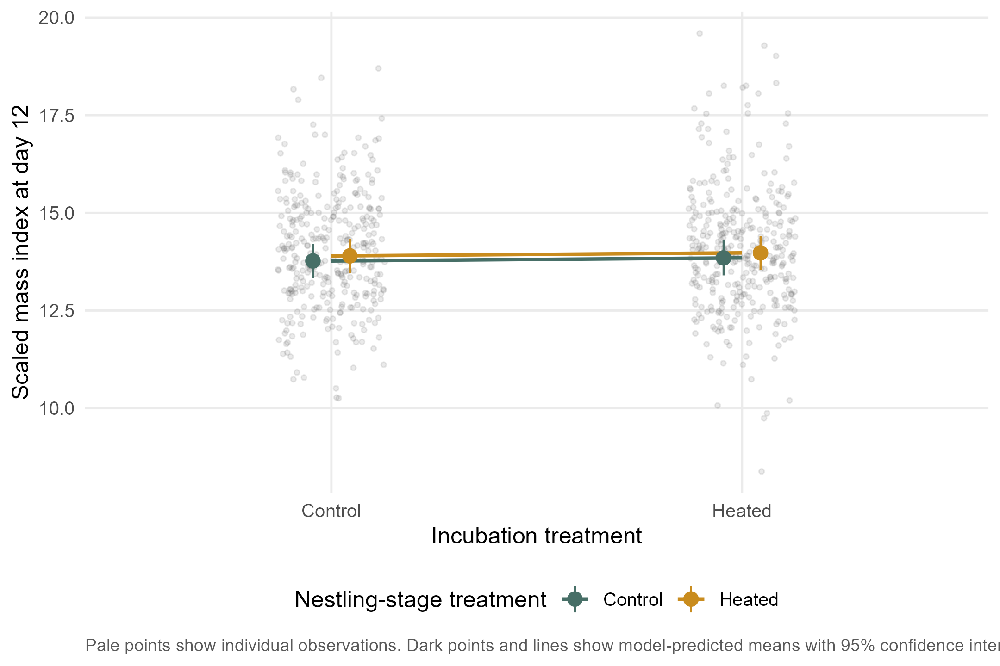
Raw-data distribution
This raw-data plot shows the response distribution within treatment groups. The box centre line is the median, the box spans the interquartile range (25th-75th percentiles), whiskers show the boxplot range, and points are individual nestling observations.
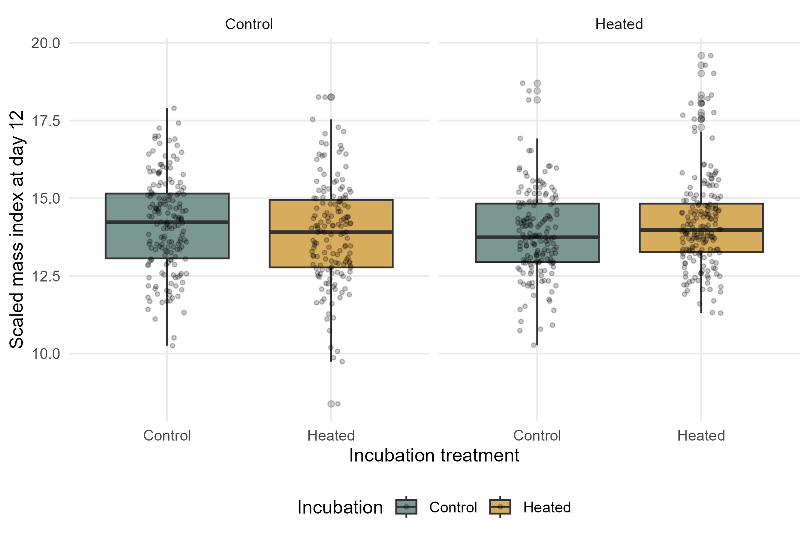
Day-12 tarsus length
Dependent variable
D12_RTARS: Do incubation-stage and nestling-stage warming affect day-12 tarsus length?
Model
Primary model: gaussian_mean
Formula: D12_RTARS ~ EXP.INC + EXP.NEST + SEX + BS_sc + (1 | F_RING) + (1 | YEAR)
Sample size: 680
Dispersion formula: ~1
Fixed-effect estimates
| Term | Estimate | SE | z | p |
|---|---|---|---|---|
| (Intercept) | 16.893 | 0.136 | 124.443 | 0.0000 |
| EXP.INCHeated | -0.155 | 0.094 | -1.643 | 0.1004 |
| EXP.NESTHeated | 0.034 | 0.094 | 0.362 | 0.7174 |
| SEXM | -0.048 | 0.037 | -1.290 | 0.1972 |
| BS_sc | 0.057 | 0.046 | 1.236 | 0.2166 |
Saved model summary
Summary PDF: summary_D12_RTARS_gaussian_mean.pdf
Diagnostic PDF: diagnostic_D12_RTARS_gaussian_mean.pdf
Show saved model summary
Family: gaussian ( identity )
Formula:
D12_RTARS ~ EXP.INC + EXP.NEST + SEX + BS_sc + (1 | F_RING) + (1 | YEAR)
Data: model_data
AIC BIC logLik -2*log(L) df.resid
1090.3 1126.5 -537.2 1074.3 672
Random effects:
Conditional model:
Groups Name Variance Std.Dev.
F_RING (Intercept) 0.26540 0.5152
YEAR (Intercept) 0.04485 0.2118
Residual 0.18515 0.4303
Number of obs: 680, groups: F_RING, 141; YEAR, 4
Dispersion estimate for gaussian family (sigma^2): 0.185
Conditional model:
Estimate Std. Error z value Pr(>|z|)
(Intercept) 16.89257 0.13575 124.44 <2e-16 ***
EXP.INCHeated -0.15506 0.09437 -1.64 0.100
EXP.NESTHeated 0.03409 0.09418 0.36 0.717
SEXM -0.04759 0.03691 -1.29 0.197
BS_sc 0.05738 0.04644 1.24 0.217
---
Signif. codes: 0 '***' 0.001 '**' 0.01 '*' 0.05 '.' 0.1 ' ' 1Model prediction figure
This plot uses model predictions as the main signal. Dark points and lines show fitted means from the primary mixed model, vertical intervals are 95% confidence intervals, and pale jittered points in the background show the original observations.
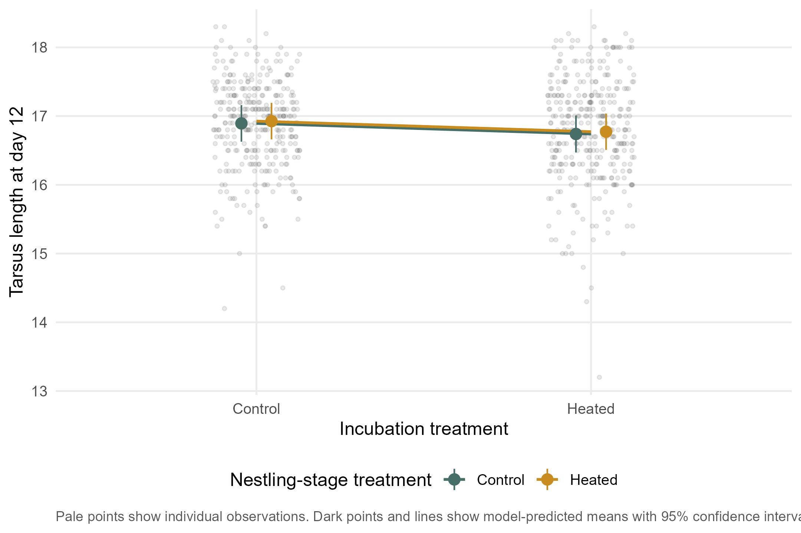
Raw-data distribution
This raw-data plot shows the response distribution within treatment groups. The box centre line is the median, the box spans the interquartile range (25th-75th percentiles), whiskers show the boxplot range, and points are individual nestling observations.
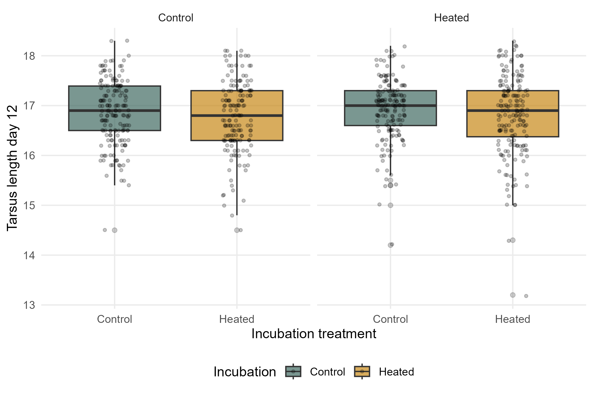
Day-12 survival
Dependent variable
D12_SURV: Do incubation-stage and nestling-stage warming affect survival to day 12?
Model
Primary model: binomial
Formula: D12_SURV ~ EXP.INC + EXP.NEST + SEX + BS_sc + (1 | F_RING) + (1 | YEAR)
Sample size: 883
Fixed-effect estimates
| Term | Estimate | SE | z | p |
|---|---|---|---|---|
| (Intercept) | 7.733 | 1.078 | 7.175 | 0.0000 |
| EXP.INCHeated | -0.198 | 0.932 | -0.213 | 0.8313 |
| EXP.NESTHeated | 0.041 | 0.929 | 0.045 | 0.9644 |
| SEXM | 0.231 | 0.335 | 0.690 | 0.4901 |
| BS_sc | 0.203 | 0.392 | 0.516 | 0.6058 |
Saved model summary
Summary PDF: summary_D12_SURV_binomial.pdf
Diagnostic PDF: diagnostic_D12_SURV_binomial.pdf
Show saved model summary
Family: binomial ( logit )
Formula: D12_SURV ~ EXP.INC + EXP.NEST + SEX + BS_sc + (1 | F_RING) +
(1 | YEAR)
Data: surv_dat
AIC BIC logLik -2*log(L) df.resid
566.6 600.1 -276.3 552.6 876
Random effects:
Conditional model:
Groups Name Variance Std.Dev.
F_RING (Intercept) 9.391e+01 9.6906055
YEAR (Intercept) 1.420e-08 0.0001192
Number of obs: 883, groups: F_RING, 169; YEAR, 4
Conditional model:
Estimate Std. Error z value Pr(>|z|)
(Intercept) 7.73315 1.07785 7.175 7.25e-13 ***
EXP.INCHeated -0.19840 0.93153 -0.213 0.831
EXP.NESTHeated 0.04142 0.92887 0.045 0.964
SEXM 0.23129 0.33513 0.690 0.490
BS_sc 0.20250 0.39244 0.516 0.606
---
Signif. codes: 0 '***' 0.001 '**' 0.01 '*' 0.05 '.' 0.1 ' ' 1